5 Sisu kolimine Pressbooksist
5.1 Meetod 1: Kopeerimine redaktorist redaktorisse (soovituslik)
See on kõige lihtsam viis sisu üle tuua. Enamus sisust saab kopeerida lihtsalt ühest redaktorist teise.
Mis säilib: pealkirjad, lihttekst, rasvane/kaldkiri, pildid, loendid, lingid, tabelid.
Mida tuleb käsitsi lisada: sisseehitatud videod (YouTube iframe’id), H5P elemendid, koodiplokid, text box-id ja muud interaktiivsed komponendid, kuna need ei kopeeru alati õigesti läbi visuaalse redaktori.
Sammud:
- Ava Pressbooks ja navigeeri peatükki, mida soovid üle tuua
- Vali kogu tekst (
Ctrl+A/Cmd+A) või ainult soovitud osa ja kopeeri (Ctrl+C/Cmd+C) - Ava Positronis vastav
.qmdfail (või loo uus, vt jaotist “3.2 Uue peatüki lisamine”) - Veendu, et Positroni redaktor on Visual Mode vaates
- Klõpsa
.qmdfaili sisus kuhu soovid sisu lisada ja kleebi (Ctrl+V/Cmd+V) - Salvesta fail (
Ctrl+S/Cmd+S)
Quarto võtab esimese “Heading” teksti ja otsustab selle järgi, mis on peatüki pealkiri. Lisaks tõstetakse see lehe ülaossa.
Seega tasub peatüki pealkiri liigutada ise lehe algusesse, et vältida probleeme.
Kuna sisukord luuakse automaatselt, tuleb alapealkirjad märkida Heading 2-ks, 3-ks jne, vastasel juhul ei toimi sisukord korrektselt.
5.2 Pressbooksi textbox-id Quartos
Pressbooksi textbox-id ei tule kopeerimisel kaasa koos õige kujundusega. Lahendus on need Quartos uuesti luua.
Sammud:
- Paiguta kursor kohta kuhu soovid luua
Callouti - Vali ülevalt tööriista ribalt
Insertja siisCallout - Vali
Typevastavalt soovitud kasti värvile (vt alt poolt) - Sisesta
Captionväljale kasti pealkiri (Nt Peatükk annab ülevaate) - Eemalda linnuke
Display icon alongside callout - vajuta ‘OK’
- Nüüd saad kirjutada kasti sisse soovitud sisu
- Kui oled korra
Calloutkasti valmis loonud saad seda edaspidi soovikorral ka kopeerida
Type määrab callouti värvi:
- Tip = roheline
- Note = sinine
- Warning = kollane
- Caution = oranš
- Important = punane
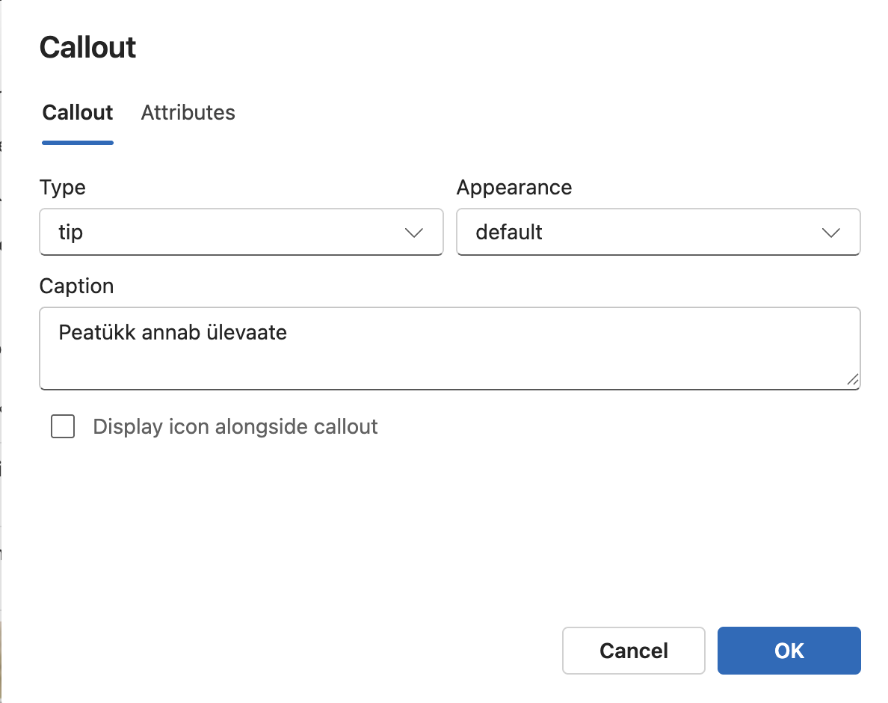
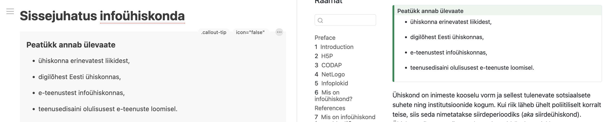
5.3 iFrame elementide lisamine(H5P, YouTube videod jms)
5.3.1 H5P elemendi lisamine
Vajuta soovitud elemendi peal nuppu <>Manus
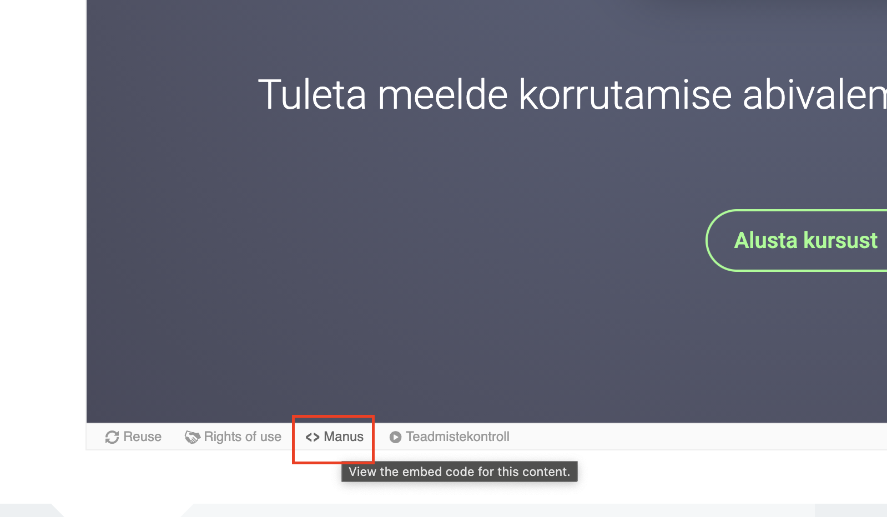
Kopeeri terve
iFrameelement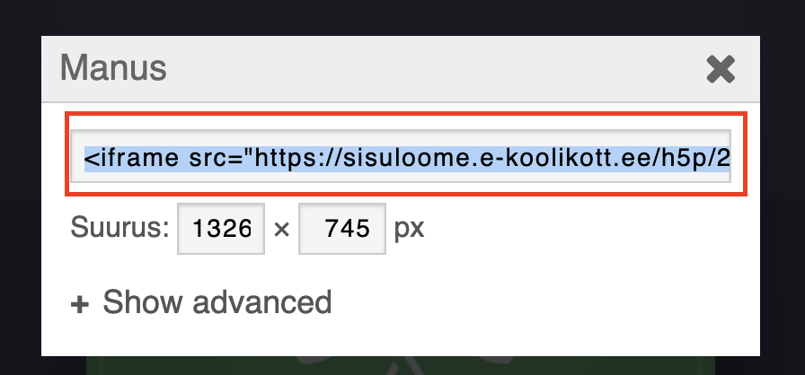
Kleebi element viusaalses redaktoris soovitud kohta
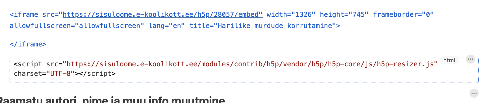
Peale faili salvestamist ja eelvaate värskendamist ilmub H5P element raamatus nähtavale
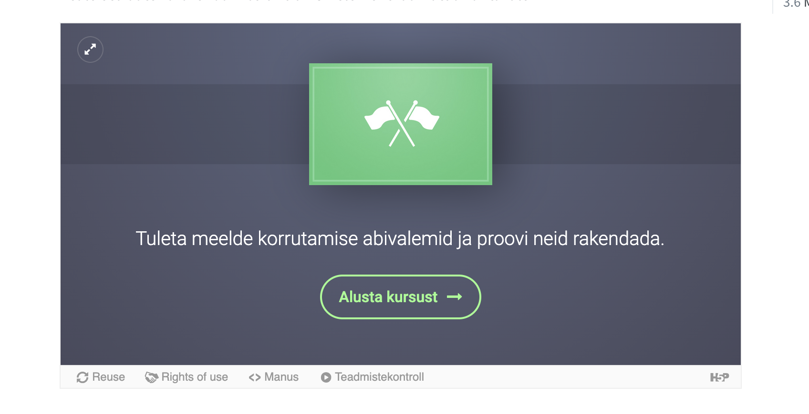
5.3.2 YouTube videote lisamine
Vajuta soovitud YouTube video alla jagamise nuppu
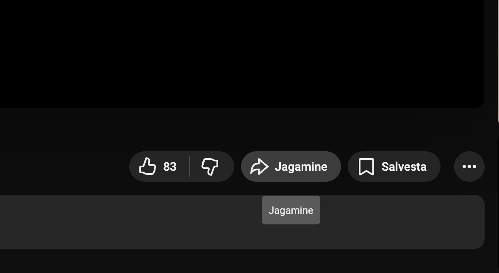
Seejärel vali manusta
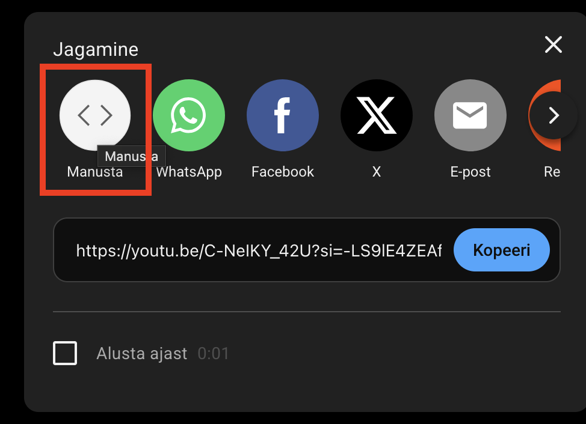
Vajuta akna alt paremalt kopeeri
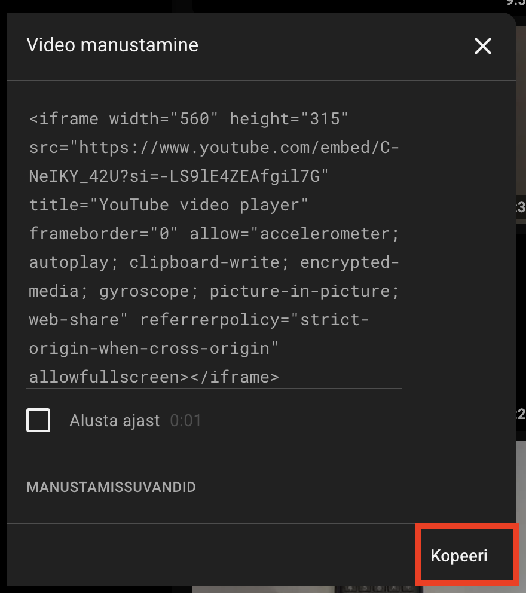
Kopeeritud
iFrameelementi kleebi visuaalses redaktoris soovitud kohta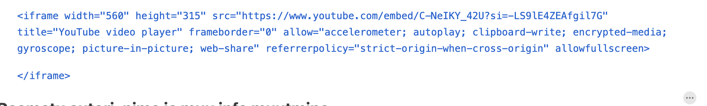
Peale faili salvestamist ja eelvaate värskendamist ilmub YouTube element raamatus nähtavale
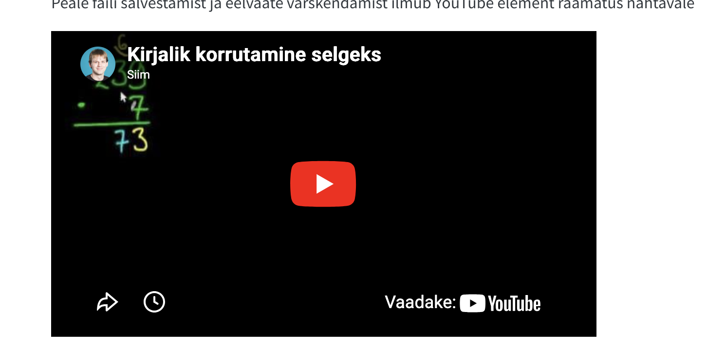
5.4 Meetod 2: Pressbooksi eksport EPUB-iks ja Pandociga Markdowniks (mittesoovituslik)
See meetod on olemas, kuid tulemus ei ole tavaliselt parem kui lihtsalt sisu redaktorist ümber kopeerimine.
Miinused:
- Pandocist tulev Markdown vajab tavaliselt palju käsitsi puhastamist
- Pildid tuleb eraldi õigesse kohta kopeerida
- Pildid ei tööta Positroni Visual mode vaates
Sammud:
- Ekspordi Pressbooksist raamat EPUB failina
- Käivita terminalis pandoc käsk (vajadusel installi enne Pandoc):
pandoc eksporditud-raamat.epub -t markdown_strict --extract-media=. -o markdownis-raamat.md- Tulemuseks saad ühe Markdown faili ja eraldi meediafailid- Pandoc paneb pildid
assetskausta - See
assetskaust tuleb tõsta_bookkausta, et pildid veebiväljundis töötaksid - Seejärel tuleb Markdown sisu üle kontrollida ja vajadusel Quartole sobivaks kohandada